A CPU “discovered, designed, and verified end-to-end by AI” makes three separate claims. This guide takes them one at a time.
This guide is written for engineers who know CPUs, RTL and verification, and who have not met interaction nets before. Statements that come from the company's article are marked as such. Readings and inferences that are this guide's own carry the tag this guide's inference.
On 18 November 2026 Architect Labs published “Introducing Frostbite: A new CPU architecture discovered, designed, and verified end-to-end by AI”. The article makes three claims that can be judged separately.
A new CPU architecture. The article calls Frostbite “a general-purpose CPU with a new instruction set built from the ground up”. The instruction set is the interaction net, described in section 5. The unit used for comparison is one quad, a two-by-two grid of tiles (a tile is one small processing unit with its own memory), paired with four “L3” nodes: 0.792 mm² on a 7 nm process, with timing closed at 500 MHz in the final layout. No chip has been built; the article describes its own power figures as “pre-silicon”. It names no target market. On what the design is good at, it says the architecture “does most strongly on highly parallelizable tasks”.
Better performance per watt. The headline number is a geometric mean of 4.59 times the performance per watt of a comparison core, over 25 test programs. The comparison core is one “superscalar, dual-issue, in-order” CPU core of 0.895 mm² in the same process. The article does not name it, “for legal reasons”. Individual programs range from 1.15 times (Fibonacci) to 23.12 times (a two-dimensional convolution).
AI did the design. The article says Frostbite “was designed with zero architectural priors”, by swarms of AI agents that “tried 58 ideas and kept 37 of them”. The specification was written in a language the company designed itself, called ASL (it is not Arm's specification language of the same abbreviation), and translated into more than 800,000 lines of Lean, a proof checker.
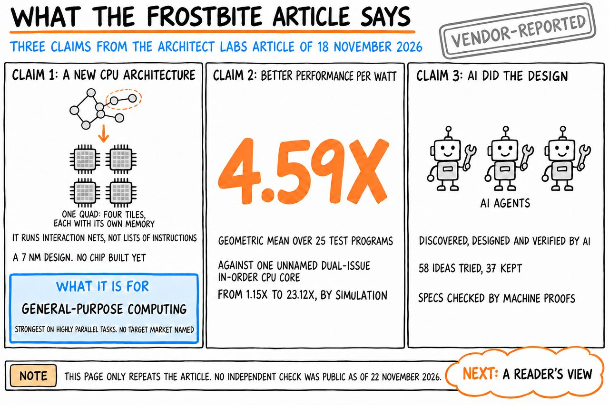
The rest of this guide gives the reasons. The short version, claim by claim:
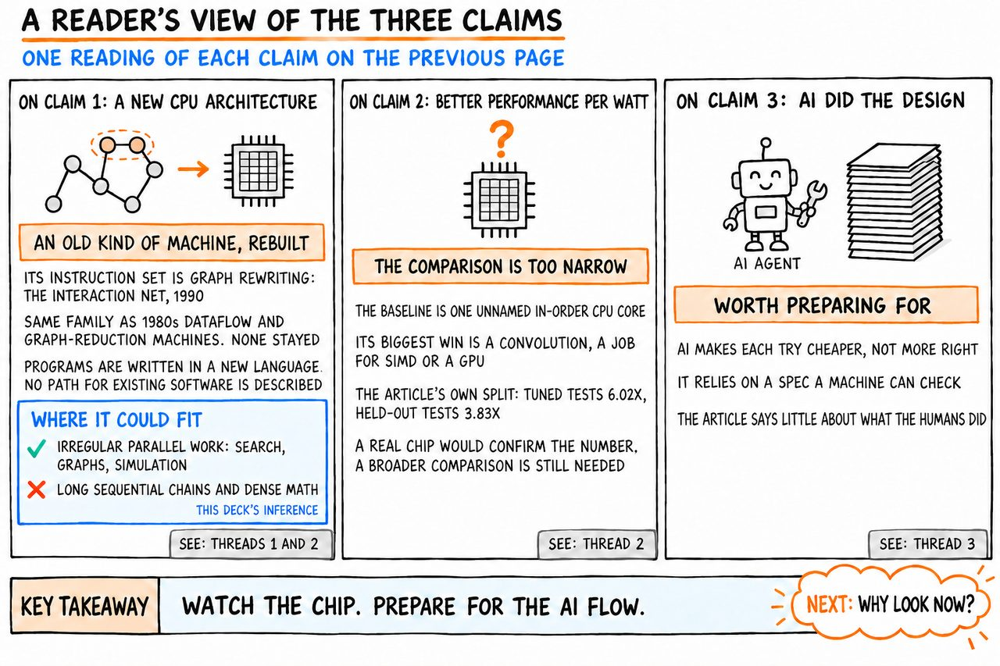
Three companies appear in this story. One old idea, the interaction net, connects them.
The two hardware efforts are connected: Frostbite's test programs are written in Vine, the language made by Tendrils.
Two points about the money are easy to miss. The $24 million seed was announced five months before Frostbite was, so it is hard to read it as a bet on this particular architecture this guide's inference. The larger of the two rounds went to Tendrils, which has not yet published design figures. Funding shows attention. It is not yet evidence that the technology works.
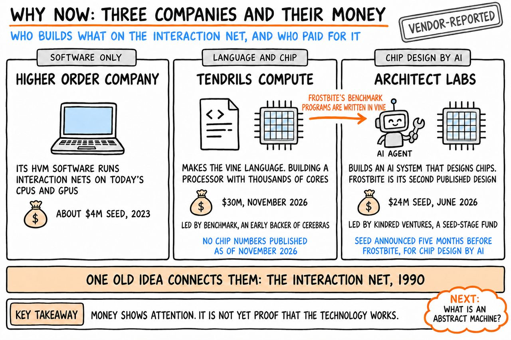
To judge a “new CPU architecture” it helps to separate four things that are easy to run together: the problem, the abstract machine, the programming language, and the implementation.
An abstract machine is a set of rules that answers three questions: what the state is, what one step does, and who decides the next step. Textbooks call this a model of computation. This guide says “abstract machine” because “model” is now easily read as “AI model”.
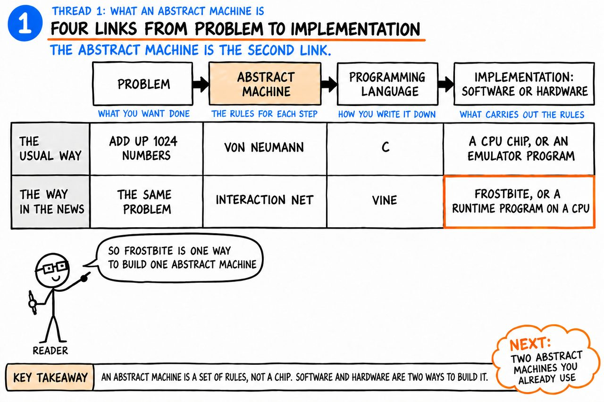
Chip engineers work with two abstract machines every day. In a synchronous circuit, the state is the contents of all registers, one step is one clock edge, and the clock decides the next step. In the von Neumann machine, the state is memory plus a program counter, one step is one instruction, and the program counter decides the next step.
Each of these can be carried out by a chip or by a program. A synchronous circuit runs on silicon or in a simulator. A von Neumann machine runs on a CPU or in an emulator. The rules are the abstract machine; the chip and the program are two ways to build it.
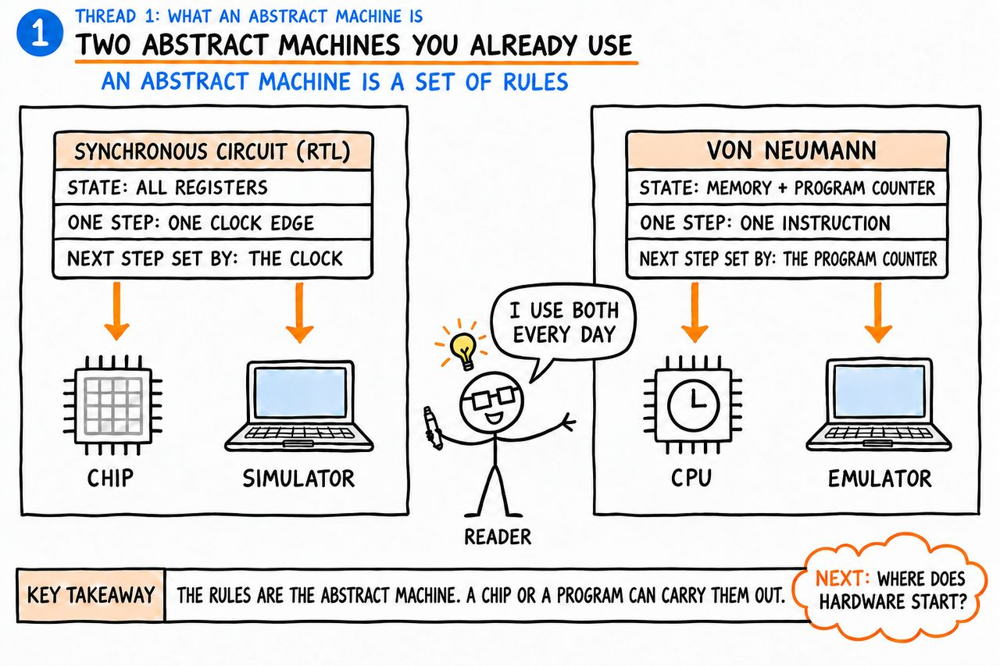
A running program passes down through a stack of abstract machines. A Python program is compiled to bytecode, which an interpreter executes, which is itself a program in an instruction set, which a CPU core implements with gates and registers, built from transistors. At every layer there is a language (how you write it), an abstract machine (the rules it follows) and an executor (the layer below, which runs it).
The instruction set is the layer where software ends and hardware begins. It is the agreement between the two sides. A proposal like Frostbite changes the abstract machine at exactly that layer, which is why it is a much larger change than a faster implementation of an existing instruction set.
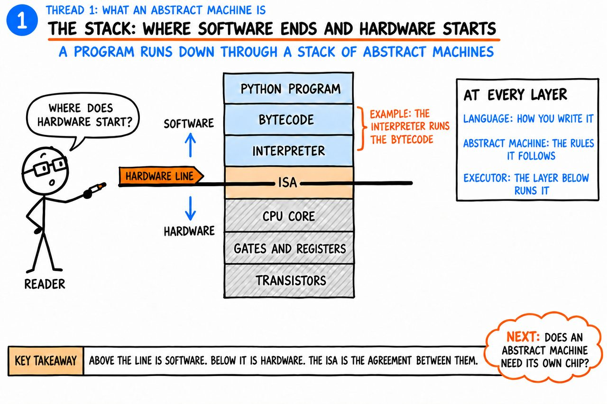
Most successful ones never got one. A spreadsheet, a database query language and a bytecode virtual machine each define their own rules, and all three run on ordinary CPUs. Their value lies in what the user no longer has to write: the order of calculation, the way to find the data, the kind of CPU underneath. An abstract machine can be useful for decades without hardware of its own.
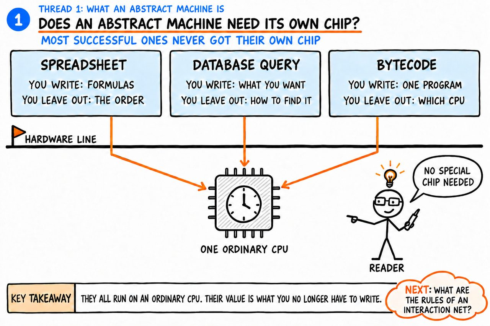
An interaction net is a graph plus a table of rewrite rules. Each node has several ports, and exactly one of them is its principal port. When two nodes are joined principal port to principal port they form an active pair, and the rule table says what replaces them. In the smallest system, two nodes of the same kind vanish and their wires are joined; two nodes of different kinds each copy the other. One step of the machine is one such rewrite. Yves Lafont published the idea in 1990.
A reader from chip design can map the terms directly: a node is an instance, a port is a pin, and a wire is a two-pin net.
The single principal port has two consequences. The machine never searches for the next step, because every active pair is ready to go. And two rewrites can never collide, because a node can belong to only one active pair. That is what makes the machine parallel without locks.
There are two costs. Every step allocates nodes and rewires them. And a wire has exactly two ends, so there is no fan-out: using a value twice takes explicit copying, which costs steps.
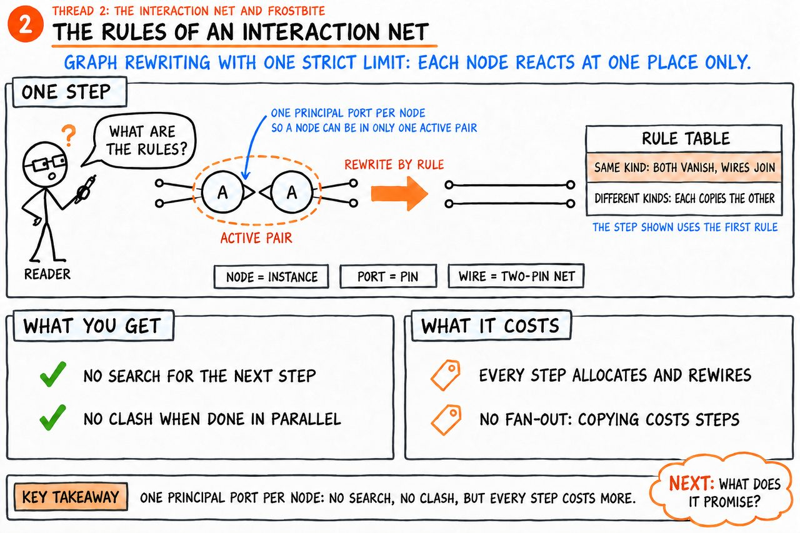
Take one job: add up 1,024 numbers, two at a time. An ordinary CPU with one executor performs 1,023 additions one after another, so the time grows with the number of items. On an interaction net each addition takes two small steps, 2,046 in all, but every pair on one level can be done at once. With enough executors the job finishes in 20 rounds: ten levels, two rounds each. The time grows with the number of levels. These counts follow from the rules; nobody measured them.
The promise, then, is to pay a constant factor in steps, here twice as many, for a gain that grows with the size of the job, on the condition that there are enough executors.
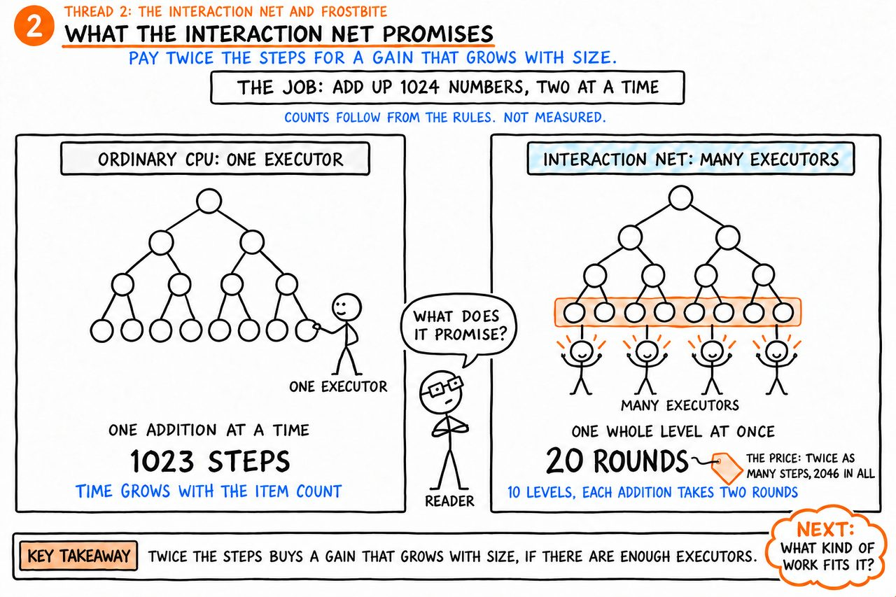
The article presents Frostbite as general-purpose and names no application. The rules point to a narrower fit. this guide's inference
The article's own results are consistent with this but do not settle it. Its best test is the convolution and its worst is Fibonacci, a chain of dependent steps. It says the design “also outperforms the TCPU on branching, dynamic code”, and gives no figures for that kind of program on its own.
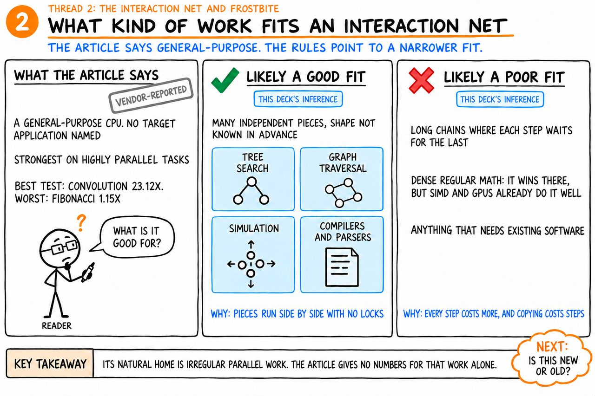
The theory is from 1990 and was largely complete within that decade. For thirty years interaction nets ran only as software on ordinary processors. The earliest hardware implementation found while preparing this guide is a university FPGA prototype, with code dating from 2024 and a written report from 2025. Most of the money arrived in 2026. As of November 2026 none of the three companies has named a customer; Architect Labs says its design system is “already deployed with semiconductor companies”, without naming them.
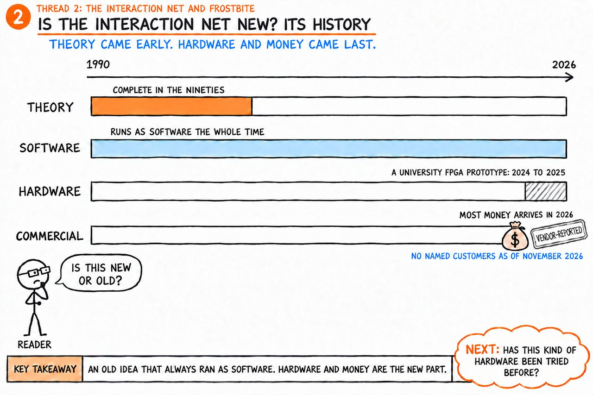
Every chip implements some abstract machine, so the question is where the abstract machine came from. Those that grew out of what hardware does cheaply, such as the von Neumann machine, RISC and the GPU, stayed in the mainstream. Those that were worked out first in mathematics or in a programming language, and then given hardware as a replacement for the general-purpose instruction set, did not: Lisp machines, the Prolog machines of Japan's Fifth Generation project, and Java processors. The interaction net belongs to the second group. Its outcome is open.
Ideas from that second group were not wasted. Dataflow machines did not survive as products, and a restricted form of dataflow now runs inside every out-of-order CPU, underneath the instruction set already in use, where existing software does not have to change.
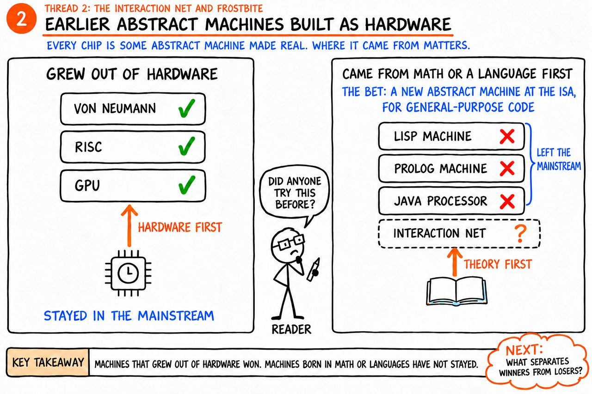
Four questions separate the winners from the rest. Does the gain grow with scale? Have ordinary CPUs slowed down? Is a real workload paying first? Can existing software come along? The two that decided past cases are the last two, and neither is about architecture. GPUs had gamers buying them years before anyone used them for computing, and existing programs kept running on the CPU beside them. Interaction-net hardware has investors, and investor money is not a paying workload. this guide's inference
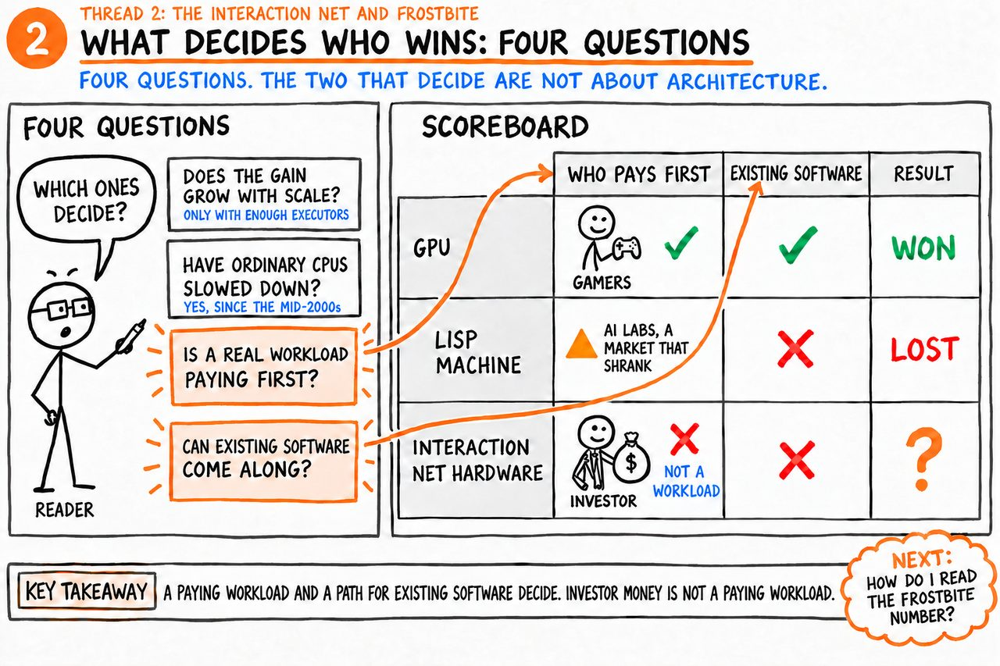
Four things qualify the headline number.
A measured chip would settle the first point. The other three would remain. The article itself says that “in the coming months” the company will compare against multi-core arrangements and larger out-of-order CPUs, on benchmarks such as SPEC and PARSEC. Those results are the ones to wait for.
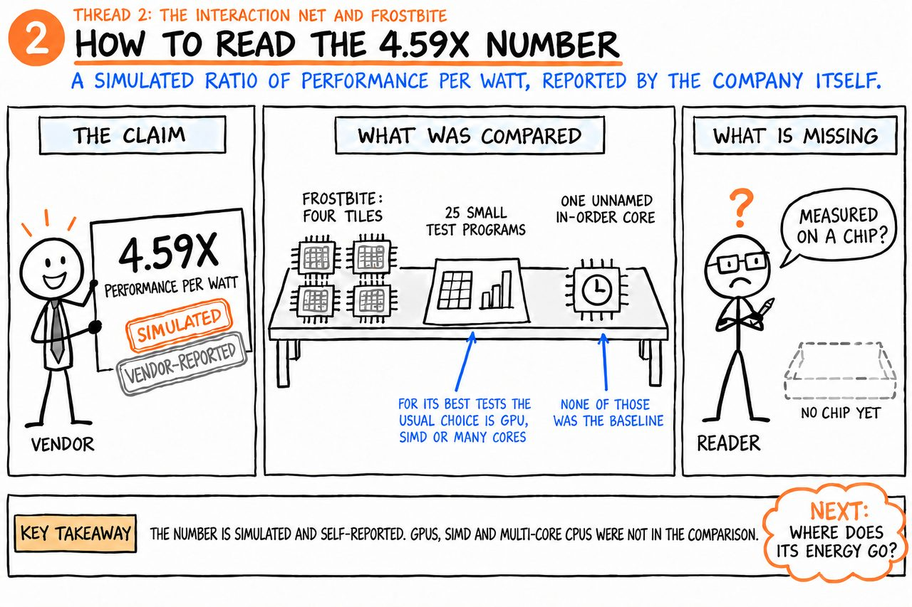
The article gives no watts or joules, only ratios and shares. If the 4.59 times holds, the same work takes about a fifth of the energy. this guide's inference
Within each design, leaving out clock distribution and averaged over 20 of the test programs, the article reports these shares. The comparison core spends 57% on memory, 27% on fetch, decode and issue, and 13% on computing; the article's three figures add up to 97%. A Frostbite quad spends 38% on memory, 26% on its on-chip network and scheduler, 16% on computing, 14% on other functions, and 6% on fetch, decode and issue.
Two things stand out. Memory is still the largest share. And about a quarter of the energy goes to moving work between tiles, a cost the conventional core does not have. Clock distribution, which these shares leave out, is 49% of the comparison core's energy and 41% of the quad's.
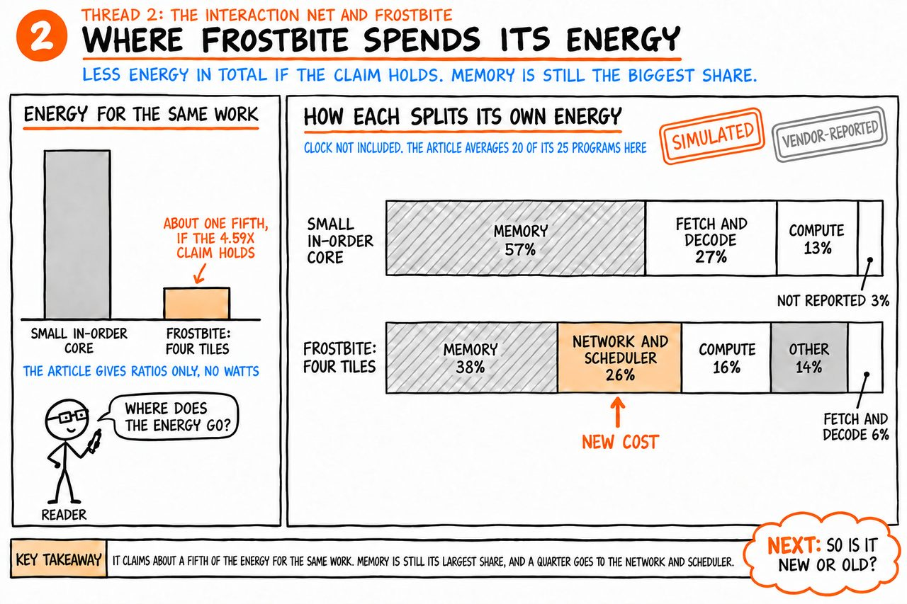
Two things are old: the interaction net, and the practice of building an abstract machine as hardware. Three things are new: the timing, since single-core gains have slowed; the AI design flow; and the money. One thing is unknown: whether the architecture wins.
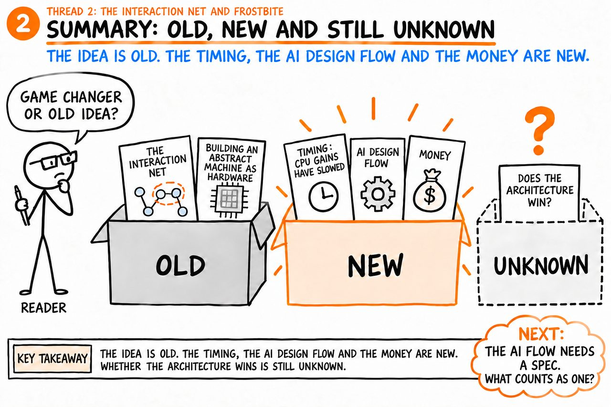
The explainers “Interaction net against von Neumann”, “Eight tests” and “Thirty-six years of interaction nets” go further into this thread, in Traditional Chinese.
Attempts to generate RTL from a specification often go badly, and the reason is usually the specification. It helps to sort specifications by what a machine can do with them.
The article describes a move up this list. Its agents first produced a 141-page PDF. Later, in the article's words, the PDF was deleted “and the ASL contracts became the only specification of the chip”.
The question “is the specification itself right?” does not go away at any level. It moves up to whoever writes the top one. this guide's inference
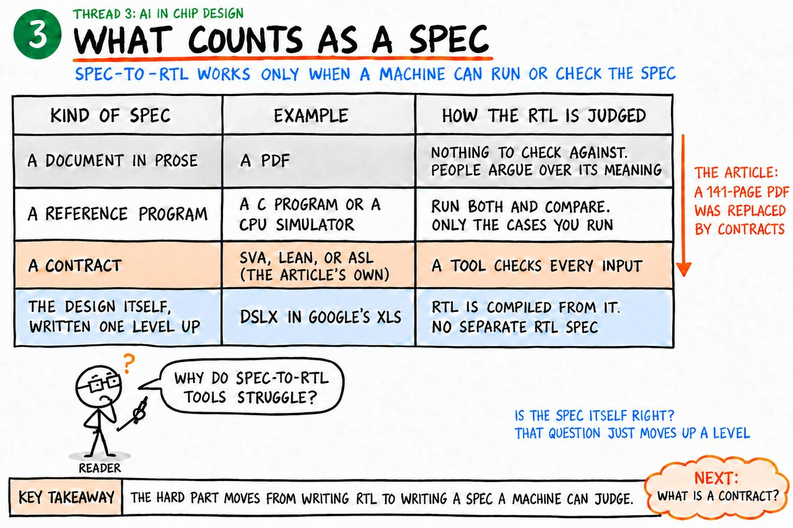
A contract is a specification a machine can check, and its job is to judge what an agent builds. A small example of this guide's own, not taken from the article: an 8-bit saturating adder, whose sum must stop at the maximum and never wrap around. An RTL version with a bug passes a handful of hand-written tests. A formal check of the same RTL against the contract finds the failing input, a = 192 and b = 64. This example was run for this guide with open-source tools.
Which language the contract is written in matters less than having a judge that checks every input.
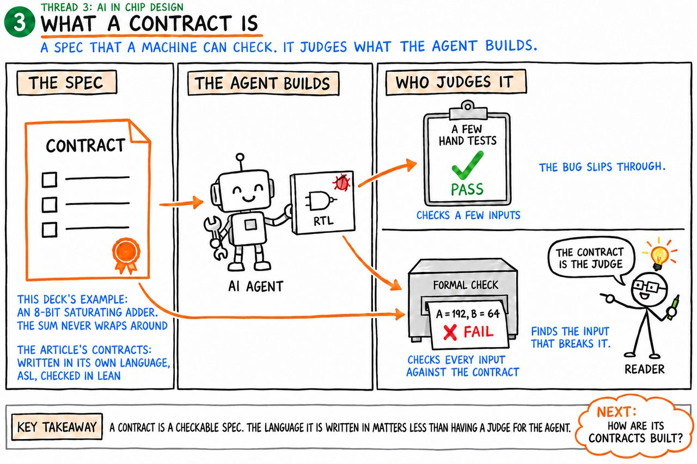
According to the article, the company “designed a new in-house specification language, ASL”. There is a contract for each of 31 blocks, and each contract names signals, events, state and clauses. ASL “translates natively to Lean”, and the Frostbite specification came to “800k+ lines of Lean”. Lean is then used “for all theorem proving when checking AI outputs across RTL, UVM, C, SVA, and more”.
Three things are not disclosed: who writes and approves the contracts, which properties are actually proven, and the text of any contract. One figure shows the structure of a single block's contract and the names of its clauses, and no clause is written out. The article says ASL will be described “in more detail in a future post”.
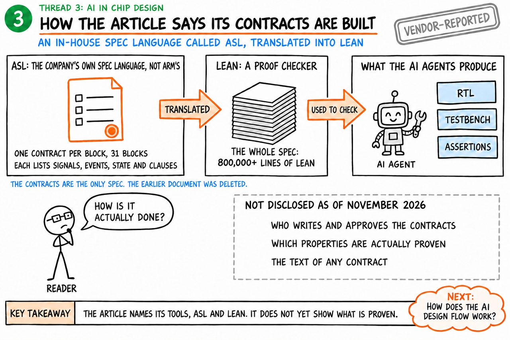
The flow is a loop. A specification goes in. Agents produce a performance simulator, RTL, tests and proofs, and layout. The outputs are checked against the contract, the simulation results come back, and the specification is revised. In the article's description of its search, each proposed change “was checked against the contracts, modeled in Arcmodel, implemented in RTL, and measured for power, and then either kept or dropped”. Arcmodel is the company's system model, itself written in ASL.
The article does not say how many people worked on Frostbite or for how long. What it attributes to people is choosing the classes of workload, splitting the test programs into a search set and a held-out set, and designing ASL. It does not say whether people wrote or reviewed the contracts, the architecture or the RTL. For the company's earlier design, Redwood, it reported “a high-level specification written by two human architects” and a design completed in “under two weeks”.
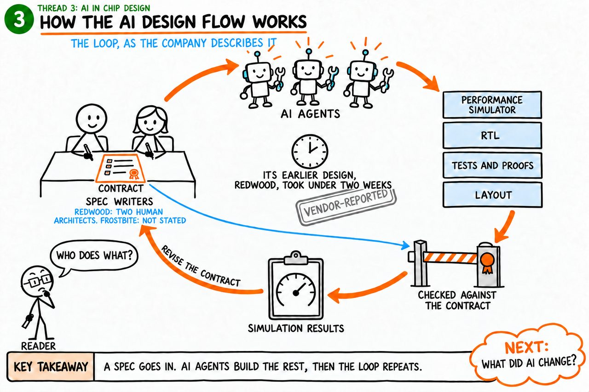
AI lowers the cost of each attempt, so many more designs can be tried. It does not change whether an attempt is right. A design that ships still has to pass the same four gates: masks and fabrication, measurement on silicon, existing software, and a paying workload.
The article contains a small illustration of the limit. The more attempts are made against a fixed set of tests, the more closely the result fits those tests, which is one way to read the gap between 6.02 times on the tuning set and 3.83 times on the held-out set. this guide's inference
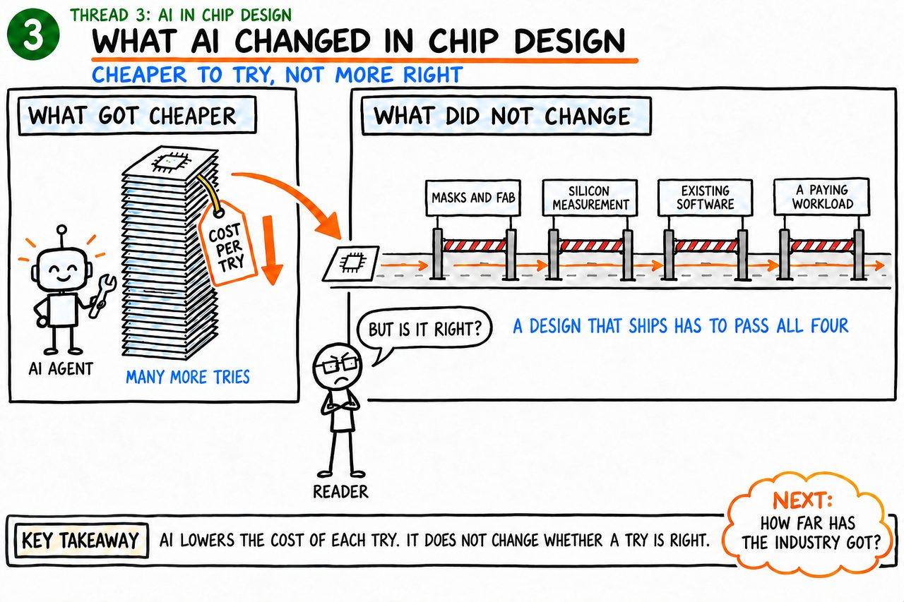
Outside this one article, AI in chip design sits at three levels, and the evidence thins as the level rises.
Frostbite claims both of the upper two levels.
Public benchmarks show the same shape as the cheaper-to-try argument. On a set of hardware design problems published by NVIDIA, single models answering once passed roughly 36% to 54% of the problems, and an agent allowed to revise its answer many times passed about 81% to 96%. Both figures come from the same NVIDIA paper, and the agent is NVIDIA's own. Repeated attempts raise the pass rate, on the condition that a testbench exists to judge each one.
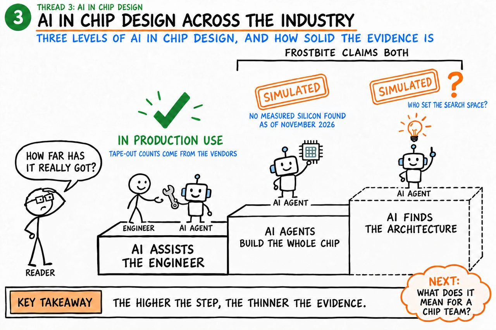
If writing RTL stops being the limit, the limit moves to the two ends: how precisely the specification is written, and whether verification can act as the judge. A chip design company already owns both. this guide's inference
A general version of what follows from that:
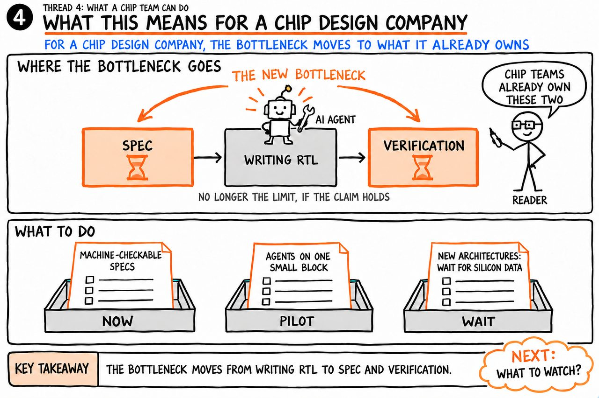
Three signals would change the reading given here: silicon numbers measured by a third party, a buyer with volume, and a path for existing software. If any one of them appears, the question is worth reopening. Another funding round is not one of them.
Three questions are worth asking of any claim of this kind. Is the number measured or projected? Were the tests used for tuning, or held out? Who verified it?
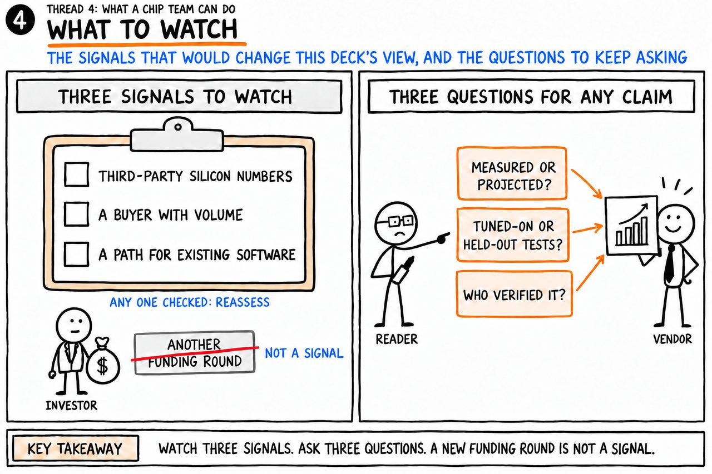